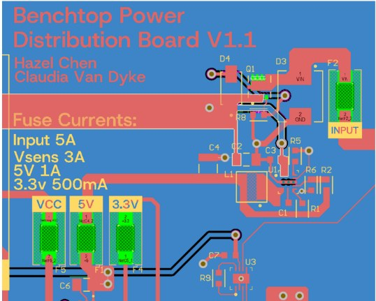
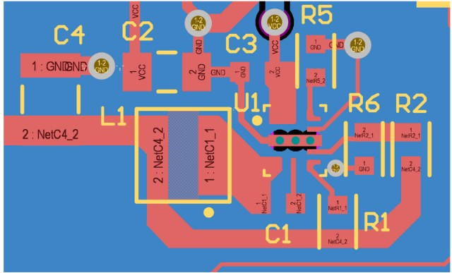
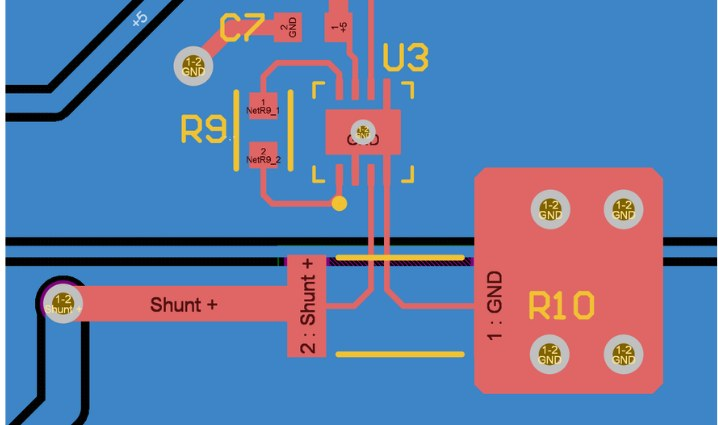
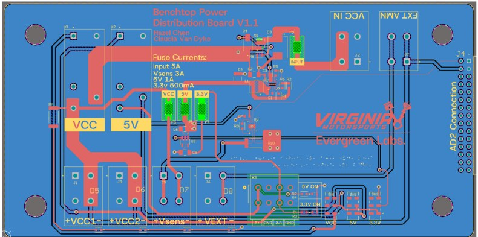
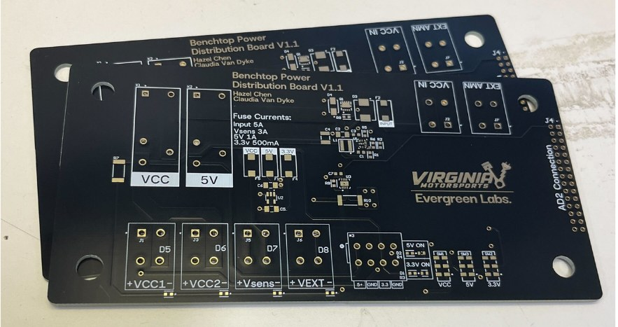

Benchtop Power Distribution Board
A bench power board for bringing up and testing the team's custom PCBs: individually switched and fused outputs, regulated 5 V and 3.3 V rails, and built-in current sensing, all on tool-free WAGO terminals.
- Designers
- Hazel Chen, Claudia Van Dyke
- For
- Virginia Motorsports
- Tools
- Altium Designer
- Input
- 12 to 36 V, 5 A max
- Status
- Built and assembled (V1.1)

Why build it
Testing a new PCB usually means a tangle of clip leads off a bench supply. This board gives every output its own fuse and switch, and uses WAGO board-to-wire quick-connect terminals, so plugging in a board under test takes seconds and a short on one output doesn't take down the others.
| Input voltage | 12 to 36 V, 5 A max |
|---|---|
| Input protection | TVS diode, P-channel MOSFET reverse-polarity protection, 5 A fuse |
| 5 V output | 5 V, 1 A max |
| 3.3 V output | 3.3 V, 0.5 A max |
| Current measurement | Shunt resistor with amplifier, plus external ammeter support |
Power protection
Each output channel has its own fuse, and a 5 A fuse protects the main input. Reverse-polarity protection uses a P-channel MOSFET (NTTFS5116PLTWG) instead of a series diode, which avoids the diode's forward voltage drop. A TVS diode clamping at 40 V protects connected hardware from input spikes.

Voltage conversion
A TI LMR60420-Q1 buck converter steps the 12 to 36 V input down to 5 V, and an AP2112K LDO then derives 3.3 V from the 5 V rail. The two-stage approach trades a little efficiency for a quieter 3.3 V output. The 5 V rail also powers two relays that switch the VCC and 5 V outputs independently, so one channel can be toggled without interrupting the rest.

Current sensing
Two outputs support current measurement. The Vsens output runs through an on-board shunt resistor and amplifier that connect to a Digilent Analog Discovery 2 for logging. The VEXT output breaks out to an external ammeter for quick checks.

Assembly
PCBs and a solder paste stencil were fabricated by JLCPCB. I applied paste with the stencil, placed SMT parts by hand, reflowed the boards in a reflow oven, then inspected and reworked as needed. Through-hole parts were hand-soldered last.

